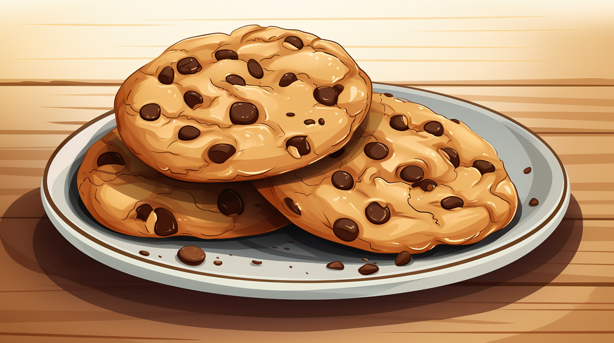

How to Bake Cookies at Home


Mixing The Dough
Ingredients:
- 2 ¼ cups all-purpose flour
- 1 tsp baking soda
- 1 tsp salt
- 1 cup (2 sticks) butter, softened
- ¾ cup granulated sugar
- ¾ cup brown sugar, packed
- 1 tsp vanilla extract
- 2 large eggs
- 2 cups chocolate chips
Steps:
- Cream butter and sugars together until smooth
- Add eggs and vanilla, mix well
- Gradually add flour, baking soda, and salt
- Stir until fully combined
- Fold in chocolate chips
Tips & Notes
- Don’t overmix the dough
- Chill dough for thicker cookies
- Butter should be softened, not melted
- Use room temperature eggs